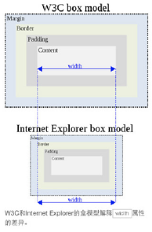

1. 网页浏览器及浏览器内核
- IE：trident
- Firefox：gecko
- Safari：webkit
- Opera：before-presto；now-Blink(developed with Google)
- Chrome：Blink(base on Webkit)
2. <!Doctype html/xhtml>
告知浏览器该以何种模式来渲染文档，告知浏览器文档使用的是html/xhtml规范的
严格模式：页面排版及JS解析是以该浏览器支持的最高标准来执行
混杂模式：不严格按照标准执行，主要用来兼容旧的浏览器，向后兼容
3. 盒模型
CSS的盒子模型有两种：IE盒子模型、标准的W3C盒子模型
盒模型：内容、内边距、边框、外边距（一般不计入盒子实际宽度）
通过box-sizing指定盒子模型种类：border-box（IE盒子模型）、content-box（标准盒子模型）

4. BFC（块级格式化上下文）
特点：每一个BFC区域都是相互独立的，互不影响
条件
- body根元素
- 设置浮动，不包括none
- 设置定位，absoulte或者fixed
- 行内块显示模式，inline-block
- 设置overflow，即hidden，auto，scroll
- 表格单元格，table-cell
- 弹性布局，flex
解决的实际场景
- margin重叠
- 外边距塌陷（子元素设置margin带动父元素一起移动，另一种方式是可以给父元素设置border）
- 清除浮动保证因子元素浮动导致的父元素高度为0的问题
- 阻止标准流元素被浮动元素覆盖（左右布局）
5. 行内元素和块级元素的具体区别、行内元素的padding和margin可设置吗？
- 块级元素(block)特性：
总是独占一行，表现为另起一行开始，而且其后的元素也必须另起一行显示;宽度(width)、高度(height)、内边距(padding)和外边距(margin)都可控制;
- 内联元素(inline)特性：（左右padding、margin可设置）
和相邻的内联元素在同一行;宽度(width)、高度(height)、内边距的top/bottom(padding-top/padding-bottom)和外边距的top/bottom(margin-top/margin-bottom)都不可改变（也就是padding和margin的left和right是可以设置的），就是里面文字或图片的大小。
- 注释:浏览器还有默认的天生inline-block元素（拥有内在尺寸，可设置高宽，但不会自动换行）
input 、img 、button 、texterea 、label。
6. div+css的布局与table布局比较
- 1.div+css的布局:页面加载速度更快,结构化清晰,页面显示简洁
- 2.表现与结构相分离
- 3.易于优化(seo),搜索引擎更友好,排名更容易靠前
Seo：Search Engine Optimization的缩写， 翻译成中文就是“搜索引擎优化"
就是通过一定的方法在网站内外发布文章、交换连接等，最终达到某个关键词在搜索引擎上获得好的排名。
7. img的alt与title异同、em与strong异同
- alt:图片加载失败时，显示在网页上的替代文字
- title:鼠标放上面时显示的文字
- strong:粗体强调标签，强调，表示内容的重要性
- em:斜体强调标签，更强烈强调，表示内容的强调点
8. 渐进增强/优雅降级
- 渐进增强 progressive enhancement：针对低版本浏览器进行构建页面，保证最基本的功能，然后再针对高级浏览器进行效果、交互等改进和追加功能达到更好的用户体验。(由基本到强大)(从低到高)
- 优雅降级 graceful degradation：一开始就构建完整的功能，然后再针对低版本浏览器进行兼容。(由完整到精简)(从高到底)
区别：
1.优雅降级是从复杂的现状开始，并试图减少用户体验的供给，而渐进增强则是从一个非常基础的，能够起作用的版本开始，并不断扩充，以适应未来环境的需要。
2.降级（功能衰减）意味着往回看；而渐进增强则意味着朝前看，同时保证其根基处于安全地带。
9. 利用多个域名来存储网站资源
- CDN(服务器)缓存更方便
- 突破浏览器并发限制
- 节约cookie带宽
- 节约主域名数,优化页面响应速度
- 防止不必要的安全问题
Cookie:浏览网页时网站服务器放在客户端的txt文件.存储一些访问这个网站有关的东西;当下次访问时,Cookie会记住上次访问的状态会设置,让服务器针对性的发送页面相关内容.
Cookie包括:
- 所访问网站的域名(domain name)/访问开始的时间/访问者的IP地址--客户端信息
- 访问者关于这个网站的设置
10. 对网页标准和标准制定机构重要性的理解
- 网页标准和标准制定机构都是为了能让web发展的更‘健康’，
- 开发者遵循统一的标准，降低开发难度，开发成本，SEO也会更好做，
- 不会因为滥用代码导致各种BUG、安全问题，最终提高网站易用性。
12. src与href的区别
src用于替换当前元素，href用于在当前文档和引用资源之间确立联系。
- src简介
source的缩写，指向外部资源的位置，指向的内容将会嵌入到文档中当前标签所在位置；在请求src资源时会将其指向的资源下载并应用到文档内，例如js脚本，img图片和frame等元素。当浏览器解析到该元素时，会暂停其他资源的下载和处理，直到将该资源加载、编译、执行完毕，图片和框架等元素也如此，类似于将所指向资源嵌入当前标签内。这也是为什么将js脚本放在底部而不是头部。
- href简介
Hypertext Reference的缩写，指向网络资源所在位置，建立和当前元素（锚点）或当前文档（链接）之间的链接，如果我们在文档中添加<link href=”common.css” rel=”stylesheet”/>，那么浏览器会识别该文档为css文件，就会并行下载资源并且不会停止对当前文档的处理。这也是为什么建议使用link方式来加载css，而不是使用@import url('a.css')方式（页面加载完成后才会加载引用的CSS）
13. 网页制作会用到的图片格式
- png-8，png-24，jpeg，gif，svg , Webp
Webp简介：WebP格式，谷歌（google）开发的一种旨在加快图片加载速度的图片格式。图片压缩体积大约只有JPEG的2/3，并能节省大量的服务器带宽资源和数据空间。Facebook Ebay等知名网站已经开始测试并使用WebP格式。
在质量相同的情况下，WebP格式图像的体积要比JPEG格式图像小40%
14. 微格式以及在前端构建中应该考虑微格式
Microformat，是一种对Web网页进行语义注解的方法，这种方法依托于标准的Web页面写作技术，例如，XHTML，这样引入语义信息对浏览器等所有现存的Web技术冲击最小。采用Microformat的Web页面，在XHTML文档中给一些标签（Tag）增加一些属性（attribute），这些属性对信息的语义结构进行注解，处理XHTML文档的软件，例如，浏览器等，如果不认识这些属性可以跳过，并不造成任何不良影响
优点：将智能数据添加到网页上，让网站内容在搜索引擎结果界面可以显示额外的提示。（应用范例：豆瓣，有兴趣自行google）
15. 在css/js代码上线之后开发人员经常会优化性能，从用户刷新网页开始，一次js请求一般情况下有哪些地方会有缓存处理？
- dns缓存
- cdn缓存
- 浏览器缓存
- 服务器缓存。
16. 一个页面上有大量的图片（大型电商网站），加载很慢，你有哪些方法优化这些图片的加载，给用户更好的体验
- 图片懒加载:
在页面上的未可视区域可以添加一个滚动条事件，判断图片位置与浏览器的视口高度+页面卷去的距离，如果前者小于后者，优先加载
// 一开始出现在可视区域中的图片也该加载
start()
var timer;
window.onscroll = function(){
// 防抖函数
if(timer){
clearTimeout(timer)
}else {
timer = setTimeout(() => {
start()
}, 200);
}
}
function start(){
$('.container img').not('[data-isloading]').each(function() {
if(isShow($(this))){
loadImg($(this))
}
})
}
// 是否在显示区域
function isShow($img){
return $img.offsetTop <= $(window).height() + $(window).scrollTop()
}
// 加载图片
function loadImg($img){
$img.attr(src, $(this).attr('data-src'))
// 避免重复加载
$img.attr('data-isloading', 1)
}
- 几种情况:
1.如果为幻灯片、相册等，可以使用图片预加载技术，将当前展示图片的前一张和后一张优先下载。
2.如果图片为css图片，可以使用CSSsprite，SVGsprite，Iconfont、Base64等技术。
3.如果图片过大，可以使用特殊编码的图片，加载时会先加载一张压缩的特别厉害的缩略图，以提高用户体验。
4.如果图片展示区域小于图片的真实大小，则因在服务器端根据业务需要先行进行图片压缩，图片压缩后大小与展示一致。
17. 谈谈以前端角度出发做好SEO需要考虑什么？
- 了解搜索引擎如何抓取网页和如何索引网页
- 需要知道一些搜索引擎的基本工作原理，各个搜索引擎之间的区别，搜索机器人（SE robot 或叫 web crawler）如何进行工作，搜索引擎如何对搜索结果进行排序等等。
- Meta标签优化
主题（Title)，网站描述(Description)，和关键词（Keywords）。
(还有一些其它的隐藏文字比如Author（作者），Category（目录），Language（编码语种）等。)
18. 有哪项方式可以对一个DOM设置它的CSS样式？
- 外部样式表，引入一个外部css文件
- 内部样式表，将css代码放在 标签内部
- 内联样式，将css样式直接定义在 HTML 元素内部
19. CSS中可以通过哪些属性定义，使得一个DOM元素不显示在浏览器可视范围内？
- 基本：
设置display: none，隐藏对应的元素但不挤占该元素原来的空间。
或者设置visibility: hidden，隐藏对应的元素但挤占该元素原来的空间
- 技巧性：
设置宽高为0，设置透明度为0，设置z-index位置在-1000em
20. rgba()和opacity的透明效果有什么不同？
- 相同点:
rgba()和opacity都能实现透明效果，
- 不同点:
opacity作用于元素，以及元素内的所有内容的透明度，
rgba()只作用于元素的颜色或其背景色。（设置rgba透明的元素的子元素不会继承透明效果！）
21. 超链接访问过后hover样式就不出现的问题是什么？如何解决？
- 被点击访问过的超链接样式不再具有hover和active了,解决方法是改变CSS属性的排列顺序: L-V-H-A（link,visited,hover,active）
Love hate 爱恨准则
22. Css Hack/ie6,7,8的hack分别是什么？
- 针对不同的浏览器写不同的CSS code的过程，就是CSS hack。
示例如下：
.test{ width:300px; height:300px; background-color:blue; /firefox/ background-color:red\9; /all ie/ background-color:yellow; /ie8/ background-color:pink; /ie7/ background-color:orange; /ie6/ } :root #test { background-color:purple\9; } /ie9/
23. css中可以让文字在垂直和水平方向上重叠的两个属性是什么？
- 垂直方向：line-height
- 水平方向：letter-spacing
关于letter-spacing的妙用：可以用于消除inline-block元素间的换行符空格间隙问题。
25. Sass、LESS是什么？大家为什么要使用他们？
CSS预处理器。他是CSS上的一种抽象层。他们是一种特殊的语法/语言编译成CSS。
例如Less是一种动态样式语言. 将CSS赋予了动态语言的特性，如变量，继承，运算， 函数. LESS 既可以在客户端上运行 (支持IE 6+, Webkit, Firefox)，也可以在服务端运行 (借助 Node.js)。
- sass定义变量：$
- less定义变量：@
为什么要使用它们？
- 结构清晰，便于扩展。
- 可以方便地屏蔽浏览器私有语法差异。这个不用多说，封装对浏览器语法差异的重复处理，减少无意义的机械劳动。
- 可以轻松实现多重继承。
- 完全兼容 CSS 代码，可以方便地应用到老项目中。
- LESS 只是在 CSS 语法上做了扩展，所以老的 CSS 代码也可以与 LESS 代码一同编译。
26. 为什么要初始化样式？
- 由于浏览器兼容的问题，不同的浏览器对标签的默认样式值不同，若不初始化会造成不同浏览器之间的显示差异
注意内容:(但是初始化CSS会对搜索引擎优化造成小影响,代码过多会影响速度)
28. IE的双边距BUG：块级元素float后设置横向margin，ie6显示的margin比设置的大两倍。
- 满足下面这三个条件时，就会出现这个BUG：
1、要为块状元素；
2、要左侧浮动；
3、要有左外边距（margin-left）。
- 解决这个BUG，只需在相应的块状元素的CSS属性中加入“display:inline;”。